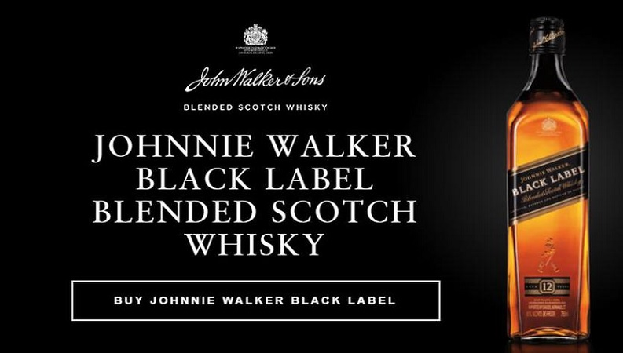
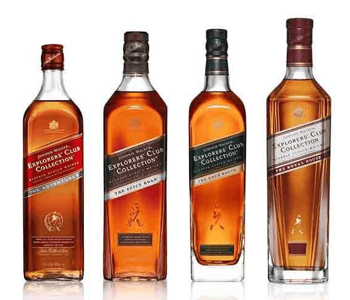
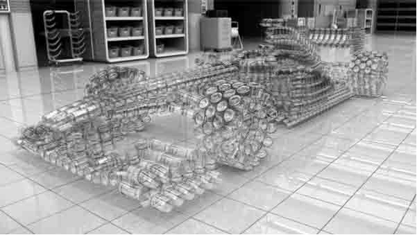

REGALE EL WHISKY N°1 DEL MUNDO

EXPLORE NUESTRO WHISKY
Explore nuestras variedades excepcionales de blended Scotch Whisky, incluyendo la clásica variedad de colores de whiskies Johnnie Walker®, la exclusiva variedad de whiskies John Walker & Sons creada para celebrar grandes logros, la Johnnie Walker® Explorers’ Club Collection™ inspirada por grandes viajes, y nuestra variedad de ediciones especiales de whiskies Johnnie Walker disponibles en cantidades limitadas.
LAS ETIQUETAS DE JOHNNIE WALKER

COLECCIÓN JOHNNIE WALKER EXPLORER'S CLUB
BEBER RESPONSABLEMENTE
Únase al Pacto para nunca beber y conducir.